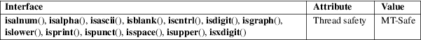

isalnum, isalpha, isascii, isblank, iscntrl, isdigit, isgraph, islower, isprint, ispunct, isspace, isupper, isxdigit, isalnum_l, isalpha_l, isascii_l, isblank_l, iscntrl_l, isdigit_l, isgraph_l, islower_l, isprint_l, ispunct_l, isspace_l, isupper_l, isxdigit_l − character classification functions
Standard C library (libc, −lc)
#include <ctype.h>
int
isalnum(int c);
int isalpha(int c);
int iscntrl(int c);
int isdigit(int c);
int isgraph(int c);
int islower(int c);
int isprint(int c);
int ispunct(int c);
int isspace(int c);
int isupper(int c);
int isxdigit(int c);
int
isascii(int c);
int isblank(int c);
int
isalnum_l(int c, locale_t
locale);
int isalpha_l(int c, locale_t
locale);
int isblank_l(int c, locale_t
locale);
int iscntrl_l(int c, locale_t
locale);
int isdigit_l(int c, locale_t
locale);
int isgraph_l(int c, locale_t
locale);
int islower_l(int c, locale_t
locale);
int isprint_l(int c, locale_t
locale);
int ispunct_l(int c, locale_t
locale);
int isspace_l(int c, locale_t
locale);
int isupper_l(int c, locale_t
locale);
int isxdigit_l(int c, locale_t
locale);
int isascii_l(int c, locale_t locale);
Feature Test Macro Requirements for glibc (see feature_test_macros(7)):
isascii():
_XOPEN_SOURCE
|| /* glibc >= 2.19: */ _DEFAULT_SOURCE
|| /* glibc <= 2.19: */ _SVID_SOURCE
isblank():
_ISOC99_SOURCE || _POSIX_C_SOURCE >= 200112L
isalnum_l(),
isalpha_l(), isblank_l(), iscntrl_l(),
isdigit_l(), isgraph_l(), islower_l(),
isprint_l(), ispunct_l(), isspace_l(),
isupper_l(), isxdigit_l():
Since glibc 2.10:
_XOPEN_SOURCE >= 700
Before glibc 2.10:
_GNU_SOURCE
isascii_l():
Since glibc 2.10:
_XOPEN_SOURCE >= 700 && (_SVID_SOURCE ||
_BSD_SOURCE)
Before glibc 2.10:
_GNU_SOURCE
These functions check whether c, which must have the value of an unsigned char or EOF, falls into a certain character class according to the specified locale. The functions without the "_l" suffix perform the check based on the current locale.
The functions with the "_l" suffix perform the check based on the locale specified by the locale object locale. The behavior of these functions is undefined if locale is the special locale object LC_GLOBAL_LOCALE (see duplocale(3)) or is not a valid locale object handle.
The list below
explains the operation of the functions without the
"_l" suffix; the functions with the "_l"
suffix differ only in using the locale object locale
instead of the current locale.
isalnum()
checks for an alphanumeric character; it is equivalent to (isalpha(c) || isdigit(c)).
isalpha()
checks for an alphabetic character; in the standard "C" locale, it is equivalent to (isupper(c) || islower(c)). In some locales, there may be additional characters for which isalpha() is true—letters which are neither uppercase nor lowercase.
isascii()
checks whether c is a 7-bit unsigned char value that fits into the ASCII character set.
isblank()
checks for a blank character; that is, a space or a tab.
iscntrl()
checks for a control character.
isdigit()
checks for a digit (0 through 9).
isgraph()
checks for any printable character except space.
islower()
checks for a lowercase character.
isprint()
checks for any printable character including space.
ispunct()
checks for any printable character which is not a space or an alphanumeric character.
isspace()
checks for white-space characters. In the "C" and "POSIX" locales, these are: space, form-feed ('\f'), newline ('\n'), carriage return ('\r'), horizontal tab ('\t'), and vertical tab ('\v').
isupper()
checks for an uppercase letter.
isxdigit()
checks for hexadecimal digits,
that is, one of
0 1 2 3 4 5 6 7 8 9 a b c d e f A B C D E F.
The values returned are nonzero if the character c falls into the tested class, and zero if not.
For an explanation of the terms used in this section, see attributes(7).

isalnum()
isalpha()
iscntrl()
isdigit()
isgraph()
islower()
isprint()
ispunct()
isspace()
isupper()
isxdigit()
isblank()
C11, POSIX.1-2008.
isascii()
isalnum_l()
isalpha_l()
isblank_l()
iscntrl_l()
isdigit_l()
isgraph_l()
islower_l()
isprint_l()
ispunct_l()
isspace_l()
isupper_l()
isxdigit_l()
POSIX.1-2008.
isascii_l()
GNU.
isalnum()
isalpha()
iscntrl()
isdigit()
isgraph()
islower()
isprint()
ispunct()
isspace()
isupper()
isxdigit()
C89, POSIX.1-2001.
isblank()
C99, POSIX.1-2001.
isascii()
POSIX.1-2001 (XSI).
POSIX.1-2008 marks it as obsolete, noting that it cannot be used portably in a localized application.
isalnum_l()
isalpha_l()
isblank_l()
iscntrl_l()
isdigit_l()
isgraph_l()
islower_l()
isprint_l()
ispunct_l()
isspace_l()
isupper_l()
isxdigit_l()
glibc 2.3. POSIX.1-2008.
isascii_l()
glibc 2.3.
The standards require that the argument c for these functions is either EOF or a value that is representable in the type unsigned char. If the argument c is of type char, it must be cast to unsigned char, as in the following example:
char c;
...
res = toupper((unsigned char) c);
This is necessary because char may be the equivalent of signed char, in which case a byte where the top bit is set would be sign extended when converting to int, yielding a value that is outside the range of unsigned char.
The details of what characters belong to which class depend on the locale. For example, isupper() will not recognize an A-umlaut (Ä) as an uppercase letter in the default C locale.
iswalnum(3), iswalpha(3), iswblank(3), iswcntrl(3), iswdigit(3), iswgraph(3), iswlower(3), iswprint(3), iswpunct(3), iswspace(3), iswupper(3), iswxdigit(3), newlocale(3), setlocale(3), toascii(3), tolower(3), toupper(3), uselocale(3), ascii(7), locale(7)